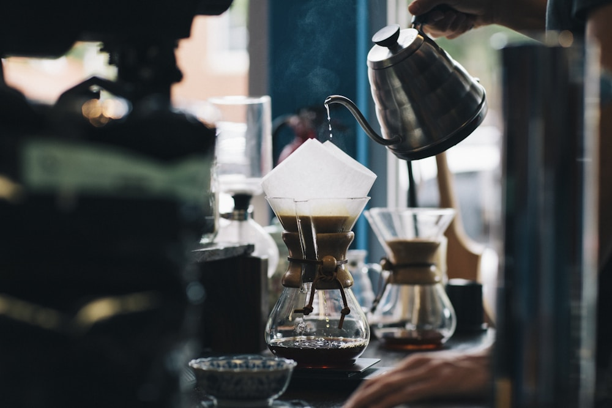

A little taste of home
Nuh Coffee
Your familiar cup, made for slow mornings and good conversations.
A little pause, poured into your favourite cup.
Come share a momentFor slow mornings, long conversations, and a little time to yourself. There's a cup for that.
Find your everyday favourite
Collect moments,
not rush hours.
We like our coffee thoughtful and our days a little less rushed. NUH is a place for both.
A familiar cup. Your favourite corner. That conversation that turns into another coffee. Sometimes, the little things are the whole thing.
NUH Coffee is a place made by Tabah.
Good company. A favourite cup. A moment that's yours.
Find your favourite cornerPop in for a slow coffee and something warm from the kitchen. We are open for whichever part of the day needs a pause.
Cucur Udang: Dr.Francostein1975 / Wikimedia Commons, CC BY-SA 4.0. Nasi Lemak: Corey LF / LensaMalaysia; colour correction by Takeaway, CC BY 2.5. Lempeng: Hajar Aznam / Wikimedia Commons, CC BY-SA 4.0. Food photos displayed with layout cropping. Coffee photo via Unsplash.
.jpg){kind=link}